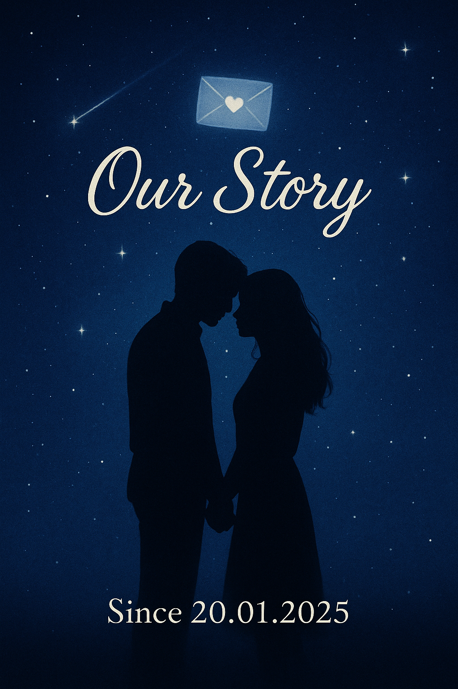
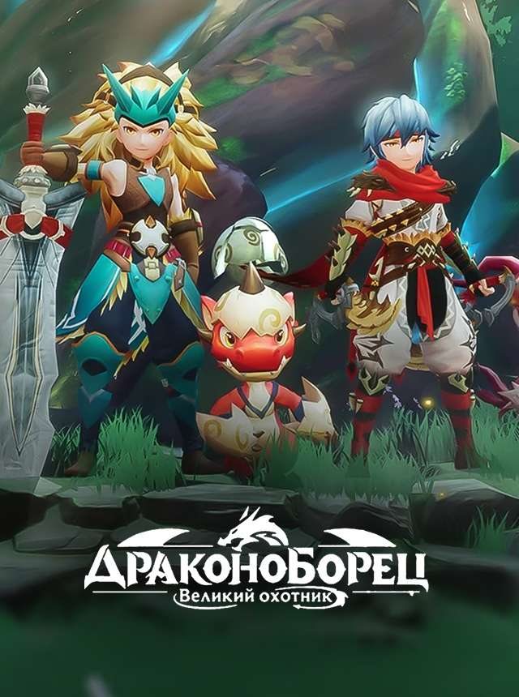
Мы встретились в игре просто случаино в подземелье на сервере.
Но в этот момент началась история, которую я никогда не забуду.
Первая встреча
Все началось неожиданно...Мы встретились в игре просто случаино в подземелье на сервере.
Но в этот момент началась история, которую я никогда не забуду.
Игра, в которой всё началось
В игре мы стали больше, чем игроками.Мы были командой. Мы были ближе.
Смех, поддержка, победы и та самая свадьба в игре…
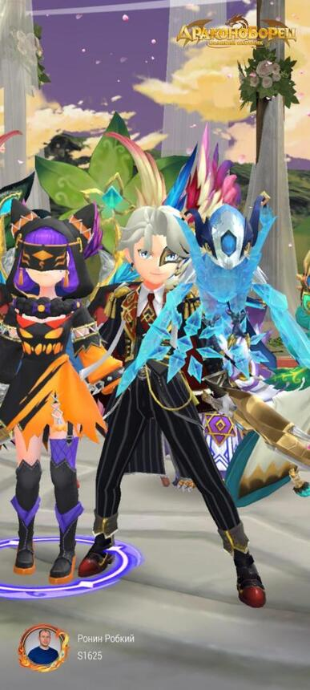
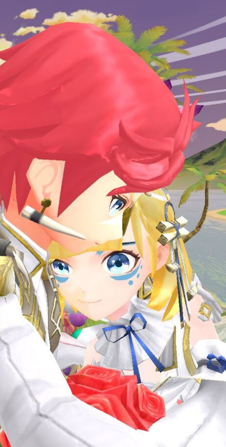
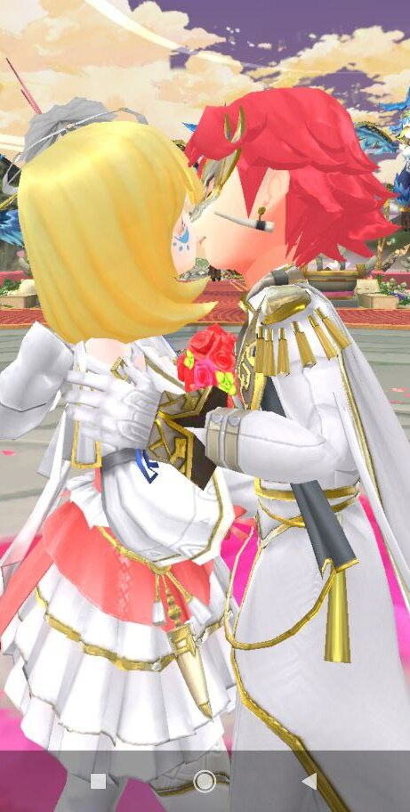
Свадьба в игре
Наша игровая свадьба самыи неожиданныи, но такой милыи момент.Даже виртуальные кольца могут согреть сердце,
если ты рядом со мнои.
Telegram и первые разговоры
Телеграм стал мостом между нашими мирами.Каждыи стикер, сообщение, аудио и видео как шаг навстречу.
С каждым днем я чувствовал тебя все ближе…
Звонки
Звонки, в которых голос стал родным.Просто слышать тебя уже счастье.
Готов часами слушать твои голос…

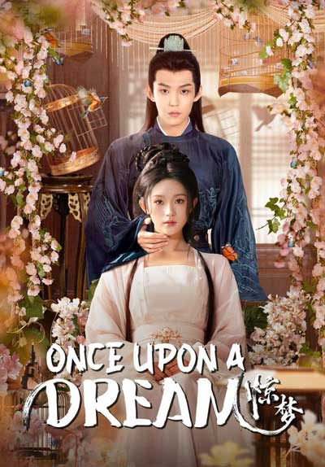
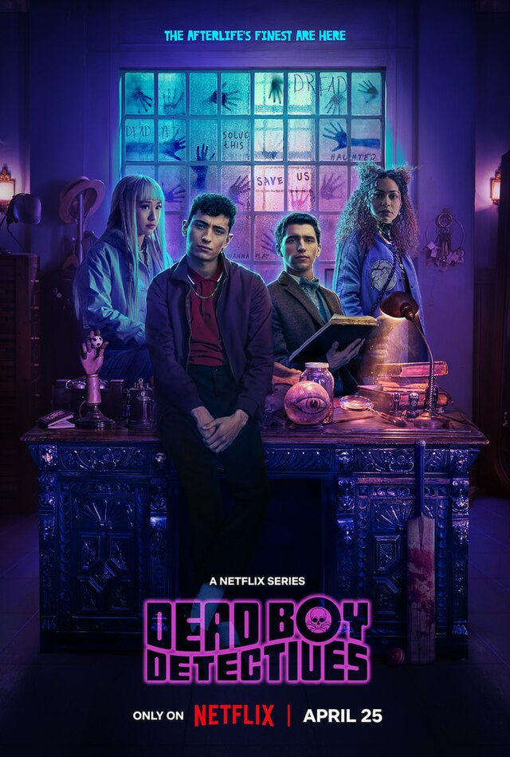
Совместный фильм
Фильм и мы вдвоем.Хоть и по разные стороны экрана,
мы пережывали вместе, чувствовали вместе.
Это было как настоящее свидание.

Фото
Твои фото как луч света.Греют своим теплом.
Смотрю на них и улыбаюсь.
Потому что на этих снимках самая красивая, прекрасная, добрая, нежная…
 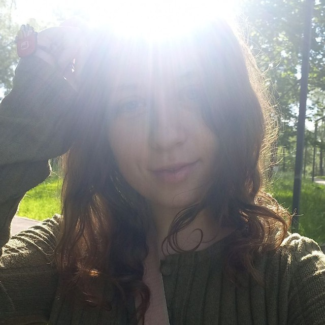
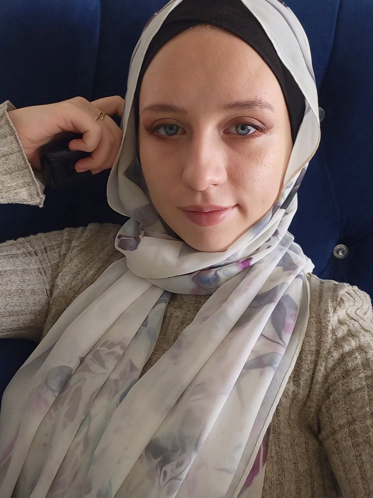
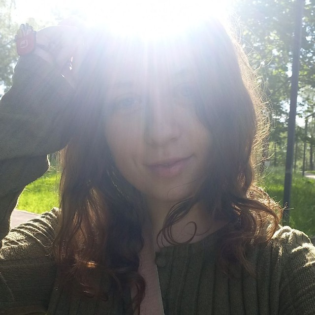
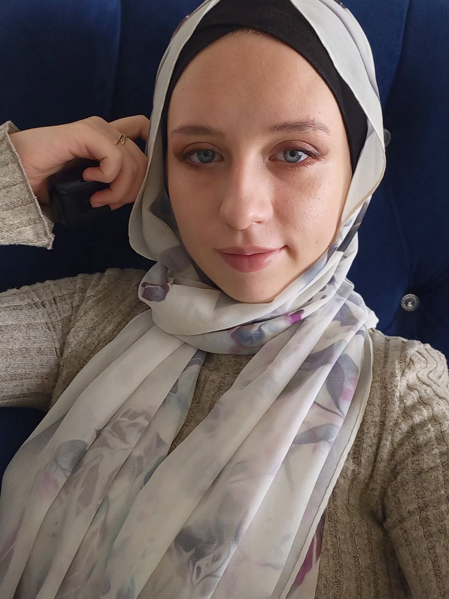

Видеозвонки
Твое лицо на экране как это чудо.Улыбка, взгляд, голос…
Эти моменты я храню в сердце.
Стихи
Иногда эмоции не помешаются в слова...Поэтому я писал стихи...
Простые, искренние, от сердца...


Благодарность
Спасибо тебе.За каждое доброе утро.
За поддержку. За то, что ты есть.
Я счастлив, что ты вошла в мою жизнь.
Прошлое и настоящее
Сколько всего мы уже прошли...А ведь началось все с игры.
Сегодня 6 месяцев.
И я бы прошел это все сначала если бы знал, что наиду тебя.
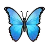
Мечты
Иногда я закрываю глаза и представляю...Что мы не по ту сторону экрана.
Что я держу тебя за руку.


Самыи важныи человек
Ты стала частью моеи жизни.С тобои я могу быть настоящим.
Ты причина моеи улыбки :)